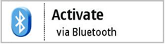
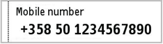
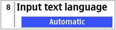
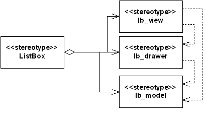

Lists API Specification
1 Overview
Lists are a common way to represent a view to data structures consisting
of text and graphics in the S60 platform, and are used extensively in most
S60 applications.
Lists are presented according to their type of functionality. Available
lists include simple selection and menu lists, markable and multiselection
lists, and setting lists. Selection and menu lists allow selection of a single
item, whereas markable and multiselection lists can be used to select multiple
items simultaneously. The setting listbox contains a list of items whose values
can be adjusted.
This example shows a multiselection listbox.
| API category | public
|
| API type | c++
|
| Existed since | Legacy S60 0.9
|
| API libraries | avkon.lib, eikcoctl.lib, eikctl.lib
|
| Location | /sf/mw/classicui/classicui_pub/lists_api
|
| Buildfiles | /sf/mw/classicui/classicui_pub/lists_api/group/bld.inf
|
1.1 Description
Listbox architecture follows the Model-View-Controller (MVC) design pattern;
a listbox-specific representation of the MVC design pattern is introduced.
The listbox layouts presented here provide a graphical representation of
the various listbox outlooks. Listbox items consist of columns into which
each item is placed. These column structures define the item format of the
listbox items, and therefore the presentation of the listbox. Listbox columns
may consist of text strings and graphics (small and large icons).
Listbox resource files define the resource data used to create lists. The
resource data consists of listbox layout and listbox item arrays.
Lists can also be created at run time without resource files.
1.2 Changes
Lists API is an SDK API and part of S60 release 3.x.
None.
1.3 Use Cases
The main use cases of Lists API are:
- Defining a listbox in resource file
- Creating a selection listbox from resource
- Creating a selection listbox runtime
- Creating a selection listbox with a large graphic a primary and a secondary
text
- Getting the selected item of a selection listbox
- Creating a multiselection listbox
- Select and deselect an item in a multiselection listbox
- Creating a markable listbox
- Mark and unmark an item in a markable listbox
- Getting the selected items of a markable or multiselection list
- Creating a settings style listbox
- Adding an item to listbox
- Removing an item from listbox
- Getting the number of items in listbox
- Offering key events to listbox
- Handling listbox events
- Creating animated highlight
1.4 Class Structure
Summary of API classes and header files
| Classes | Files
|
|
AknListBoxLayouts
/epoc32/include/mw/aknlists.h
|
AknListBoxLinesTemplate | /epoc32/include/mw/aknlists.h
|
AknListBoxUtils | /epoc32/include/mw/aknlists.h
|
AknPopupListEmpty | /epoc32/include/mw/aknlists.h
|
CAknCaleMonthStyleGrid | /epoc32/include/mw/aknlists.h
|
CAknColumnListBox | /epoc32/include/mw/aknlists.h
|
CAknColumnListBoxView | /epoc32/include/mw/aknlists.h
|
CAknDouble2GraphicLargeGraphicStyleListBox | /epoc32/include/mw/aknlists.h
|
CAknDouble2GraphicStyleListBox | /epoc32/include/mw/aknlists.h
|
CAknDouble2LargeStyleListBox | /epoc32/include/mw/aknlists.h
|
CAknDouble2PopupMenuStyleListBox | /epoc32/include/mw/aknlists.h
|
CAknDoubleGraphicPopupMenuStyleListBox | /epoc32/include/mw/aknlists.h
|
CAknDoubleGraphicStyleListBox | /epoc32/include/mw/aknlists.h
|
CAknDoubleLargeGraphicPopupMenuStyleListBox | /epoc32/include/mw/aknlists.h
|
CAknDoubleLargeStyleListBox | /epoc32/include/mw/aknlists.h
|
CAknDoubleNumberStyleListBox | /epoc32/include/mw/aknlists.h
|
CAknDoublePopupMenuStyleListBox | /epoc32/include/mw/aknlists.h
|
CAknDoubleStyle2ListBox | /epoc32/include/mw/aknlists.h
|
CAknDoubleStyleListBox | /epoc32/include/mw/aknlists.h
|
CAknDoubleTimeStyleListBox | /epoc32/include/mw/aknlists.h
|
CAknFormDoubleGraphicStyleListBox | /epoc32/include/mw/aknlists.h
|
CAknFormDoubleStyleListBox | /epoc32/include/mw/aknlists.h
|
CAknFormGraphicStyleListBox | /epoc32/include/mw/aknlists.h
|
CAknFormGraphicWideStyleListBox | /epoc32/include/mw/aknlists.h
|
CAknListBoxLayoutDecorator | /epoc32/include/mw/AknListBoxLayoutDecorator.h
|
CAknListBoxSettingPage | /epoc32/include/mw/AknListBoxSettingPage.h
|
CAknMarkableListDialog | /epoc32/include/mw/aknselectionlist.h
|
CAknPinbStyleGrid | /epoc32/include/mw/aknlists.h
|
CAknQdialStyleGrid | /epoc32/include/mw/aknlists.h
|
CAknSelectionListDialog | /epoc32/include/mw/aknselectionlist.h
|
CAknSetStyleListBox | /epoc32/include/mw/aknlists.h
|
CAknSetStyleListBoxView | /epoc32/include/mw/aknlists.h
|
CAknSettingNumberStyleListBox | /epoc32/include/mw/aknlists.h
|
CAknSettingStyleListBox | /epoc32/include/mw/aknlists.h
|
CAknSingle2GraphicPopupMenuStyleListBox | /epoc32/include/mw/aknlists.h
|
CAknSingleGraphicBtPopupMenuStyleListBox | /epoc32/include/mw/aknlists.h
|
CAknSingleGraphicHeadingPopupMenuStyleListBox | /epoc32/include/mw/aknlists.h
|
CAknSingleGraphicHeadingStyleListBox | /epoc32/include/mw/aknlists.h
|
CAknSingleGraphicPopupMenuStyleListBox | /epoc32/include/mw/aknlists.h
|
CAknSingleGraphicStyleListBox | /epoc32/include/mw/aknlists.h
|
CAknSingleHeadingPopupMenuStyleListBox | /epoc32/include/mw/aknlists.h
|
CAknSingleHeadingStyleListBox | /epoc32/include/mw/aknlists.h
|
CAknSingleLargeStyleListBox | /epoc32/include/mw/aknlists.h
|
CAknSingleNumberHeadingStyleListBox | /epoc32/include/mw/aknlists.h
|
CAknSingleNumberStyleListBox | /epoc32/include/mw/aknlists.h
|
CAknSinglePopupMenuStyleListBox | /epoc32/include/mw/aknlists.h
|
CAknSinglePopupSubmenuStyleListBox | /epoc32/include/mw/aknlists.h
|
CAknSingleStyleListBox | /epoc32/include/mw/aknlists.h
|
CColumnListBoxData | /epoc32/include/mw/eikclbd.h
|
CColumnListBoxData::TColors | /epoc32/include/mw/eikclbd.h
|
CColumnListBoxItemDrawer | /epoc32/include/mw/eikclb.h
|
CColumnListBoxView | /epoc32/include/mw/eikclb.h
|
CDoubleLargeStyleItemDrawer | /epoc32/include/mw/aknlists.h
|
CEikColumnListBox | /epoc32/include/mw/eikclb.h
|
CEikColumnListBoxEditor | /epoc32/include/mw/eikclb.h
|
CEikFormattedCellListBox | /epoc32/include/mw/eikfrlb.h
|
CEikListBox | /epoc32/include/mw/eiklbx.h
|
CEikListBoxTextEditor | /epoc32/include/mw/eiklbed.h
|
CEikSettingsListBox | /epoc32/include/mw/eikslb.h
|
CEikSnakingListBox | /epoc32/include/mw/eiklbx.h
|
CEikSnakingTextListBox | /epoc32/include/mw/eiktxlbx.h
|
CEikTextListBox | /epoc32/include/mw/eiktxlbx.h
|
CFormGraphicListBoxData | /epoc32/include/mw/eikfrlbd.h
|
CFormattedCellGridData | /epoc32/include/mw/eikfrlbd.h
|
CFormattedCellListBoxData | /epoc32/include/mw/eikfrlbd.h
|
CFormattedCellListBoxData::TColors | /epoc32/include/mw/eikfrlbd.h
|
CFormattedCellListBoxItemDrawer | /epoc32/include/mw/eikfrlb.h
|
CFormattedCellListBoxView | /epoc32/include/mw/eikfrlb.h
|
CListBoxData | /epoc32/include/mw/eiklbd.h
|
CListBoxData::CFontsWithStyle | /epoc32/include/mw/eiklbd.h
|
CListBoxView | /epoc32/include/mw/eiklbv.h
|
CListBoxViewExtension | /epoc32/include/mw/eiklbv.h
|
CListItemDrawer | /epoc32/include/mw/eiklbi.h
|
CPopupFormattedListBoxData | /epoc32/include/mw/eikfrlbd.h
|
CSettingItemEditingListBoxData | /epoc32/include/mw/eikfrlbd.h
|
CSettingsListBoxItemDrawer | /epoc32/include/mw/eikslb.h
|
CSettingsListBoxView | /epoc32/include/mw/eikslb.h
|
CSingleHeadingStyleItemDrawer | /epoc32/include/mw/aknlists.h
|
CSingleHeadingStyleView | /epoc32/include/mw/aknlists.h
|
CSnakingListBoxView | /epoc32/include/mw/eiklbv.h
|
CTextListBoxModel | /epoc32/include/mw/eiktxlbm.h
|
CTextListItemDrawer | /epoc32/include/mw/eiklbi.h
|
CWordWrappedFormattedCellItemDrawer | /epoc32/include/mw/aknlists.h
|
MAknMarkingModeObserver | /epoc32/include/mw/aknmarkingmodeobserver.h
|
MColumnListBoxAnimBackgroundDrawer | /epoc32/include/mw/eikclbd.h
|
MEikListBoxEditor | /epoc32/include/mw/eiklbed.h
|
MEikListBoxObserver | /epoc32/include/mw/eiklbo.h
|
MListBoxAnimBackgroundDrawer | /epoc32/include/mw/eikfrlbd.h
|
MListBoxEditorObserver | /epoc32/include/mw/eiklbed.h
|
MListBoxItemChangeObserver | /epoc32/include/mw/eiklbx.h
|
MListBoxModel | /epoc32/include/mw/eiklbm.h
|
MListBoxSelectionObserver | /epoc32/include/mw/eiklbx.h
|
MListVisibilityObserver | /epoc32/include/mw/eiklbv.h
|
MTextListBoxModel | /epoc32/include/mw/eiklbm.h
|
TListFontBoundValues | /epoc32/include/mw/eiklbd.h
|
TListItemProperties | /epoc32/include/mw/eiklbi.h
|
| No classes | /epoc32/include/mw/eiklbx.pan
|
This diagram shows the general structure of Lists API.
Ggeneral class diagram of Lists API
1.5 Listbox architecture
The listbox control, is an implementation of the MVC design pattern. CEikListBox is
the base class for all lists in the S60 platform. It also acts as the controller. CListBoxView represents
the view and MListBoxModel the data.
The model, class MListBoxModel , is an abstract class that
specifies the interface to access the data. The model does not contain any
information about the appearance of the listbox.
The view, class CListBoxView , handles the appearance of
the listbox and displays the items on the listbox that are currently visible.
The controller, class CEikListBox , acts as the controller
between the model and the view, connecting them and communicating between
them.
MVC representation of a listbox.
1.6 Listbox types
Lists are divided into the following types based on their functionality.
1.6.1 Menu listbox
Menu lists, also known as pop-up lists, provide a simple vertical list
view and are used to select one item from a list. The Options command is not
available while browsing the menu listbox. Only Select and Cancel actions
can be performed on the menu listbox.
Menu listbox
1.6.2 Selection listbox
A selection listbox is a generic way of displaying and accessing data in
an application. While browsing the selection listbox, the Options menu can
also be accessed for additional functions.
Selection listbox
1.6.3 Multiselection listbox
Multiselection lists allow the user to select multiple items and perform
an action on those items simultaneously. Selection is done with the selection
key and acceptance with the OK softkey. The Options menu is not available
while browsing and selecting items on the multiselection listbox, the user
can only check and uncheck items, and accept the selections (OK) or cancel
(Back).
Multiselection listbox
1.6.4 Markable listbox
A markable listbox is essentially a selection listbox with an added feature
that allows list items to be marked. Any number of items can be marked on
the list. A command applies to all of the marked items. The Options menu is
available for additional functions while browsing and selecting items on the
markable listbox.
The marking feature is usually applied to operations that handle a set
of data simultaneously, such as deleting or moving items. By marking the items,
the user can easily handle sets of data requiring identical actions, instead
of performing the action individually on each item.
Markable listbox
1.6.5 Setting listbox
The setting listbox is a selection listbox containing items whose value
can be adjusted. A setting listbox item is displayed as an attribute title
text with an attribute value below it, which can be altered. The Options menu
is available for additional functions while browsing the setting listbox.
Setting listbox
1.6.6 Listbox types in listbox resource definition
The listbox types are defined by the flags parameter in the LISTBOX structure.
This section presents the values for the flags parameter.
These identifiers are defined in the avkon.hrh file.
-
EAknListBoxMenuList A menu listbox that provides a
simple vertical list view used to select a single item on the list.
-
EAknListBoxSelectionList A selection listbox that allows
selection of a single item. The Options menu is available for the additional
functions to be performed for the selected item.
-
EAknListBoxMultiselectionList A multiselection listbox
that allows selection of multiple list items and performs an action to them
collectively.
-
EAknListBoxMarkableList A markable listbox that allows
multiple list items to be marked for action. Unlike the multiselection list,
the Options menu is available for the additional functions.
The flags that can be combined with any of the previous choices:
-
EAknListBoxViewerFlags A flag that may be used to create
a specific listbox as a viewer. A viewer listbox allows the listbox contents
to be viewed, without a selection possibility. The highlight indicator is
not present at the viewer listbox and the listbox is viewed and scrolled in
page-at-once manner. See the example below for the usage of this flag.
1.7 Listbox format
The listbox format and layout is defined by using string formatting for
the listbox columns. The following section describes the column structures
and the listbox layout types that can be used.
1.7.1 Listbox item column structure
Each listbox item is divided into three columns: A, B, and C. The columns
can be combined so it is not necessary to have the columns separated. The
following column combinations are possible for listbox items: AB, BC, and
ABC.
The listbox columns are defined as follows:
- Column A: Small graphic (icon), item number
- Column B: Heading (title or attribute of the item)
- Column AB: Heading (title or attribute of the item), large icon or thumbnail
- Column C/BC/ABC: Text of the item
An additional icon can be displayed to the right of column C, also referred
to as column D.
Listbox item column structure
1.7.2 Listbox item layouts
The listbox item can be represented in the following layouts. The examples
shown provide a graphical representation of the listbox layouts.
The listbox item formatting string consists of listbox item columns that
are separated by the tab character (\t). Therefore tab character is not allowed
in listbox string anywhere else. It has to be removed before passing to listbox.
The listbox item layouts that contain graphics (icons) specify the icon
to be used when displaying the listbox item. For layouts containing graphics
(icons), the listbox item formatting string contains a number defining the
index of the icon to be displayed for the specific listbox item.
The following section shows the possible listbox item layouts, their graphical
representation, and the formatting string.
1.7.2.1 Single-line item

Single-line item
Class name: CAknSingleStyleListBox
Column usage: Main text (columns ABC)
String format: "\tMeeting\t\t"
1.7.2.2 Single-line item with number

Single-line item with number
Class name: CAknSingleNumberStyleListBox
Column usage: Number (column A), main text (columns BC)
String format: "8\tMeeting\t\t"
1.7.2.3 Single-line item with heading
Single-line item with heading
Class name: CAknSingleHeadingStyleListBox
Column usage: Heading text (column A), main text (columns BC)
String format: "job\tAstronaut\t\t"
1.7.2.4 Single-line item with small graphic

Single-line item with small graphic
Class name: CAknSingleGraphicStyleListBox
Column usage: Small graphic (column A), main text (columns BC)
String format: "0\tDownload themes\t\t"
Please note that the first column in the item string defines the index
of the icon to be displayed for the specific listbox item. See [Lists_API_Specification.topic3.4 Creating a selection listbox with a large graphic a primary and a secondary text] for
example code on how to use the icons in the listbox.
1.7.2.5 Single-line item with small graphic and heading
Single-line item with small graphic and heading
Class name: CAknSingleGraphicHeadingStyleListBox
Column usage: Small graphic (column A), heading text (column B), main text
(column C)
String format: "1\t21/10\tMeeting\t"
Please note that the first column in the item string defines the index
of the icon to be displayed for the specific listbox item. See [Lists_API_Specification.topic3.4 Creating a selection listbox with a large graphic a primary and a secondary text] for
example code on how to use the icons in the listbox.
1.7.2.6 Single-line item with large graphic

Single-line item with large graphic
Class name: CAknSingleLargeStyleListBox
Column usage: Large graphic (column A), main text (columns BC)
String format: "1\tValid keys\t\t"
Please note that the first column in the item string defines the index
of the icon to be displayed for the specific listbox item. See [Lists_API_Specification.topic3.4 Creating a selection listbox with a large graphic a primary and a secondary text] for
example code on how to use the icons in the listbox.
1.7.2.7 Two-line item

Two-line item
Class name: CAknDoubleStyle2ListBox
Column usage: Main text (columns ABC)
String format: "\tCertificate management\t\t"
1.7.2.8 Double item

Double item
Class name: CAknDoubleStyleListBox
Column usage: Primary text (columns AB), secondary text (column C)
String format: "\tActivate\tvia Bluetooth\t"
1.7.2.9 Double item with number

Double item with number
Class name: CAknDoubleNumberStyleListBox
Column usage: Number (column A), primary text (column B), secondary text
(column C)
String format: "1\tActivate\tvia Bluetooth\t"
Please note that the first column in the item string defines the index
of the icon to be displayed for the specific listbox item. See [Lists_API_Specification.topic3.4 Creating a selection listbox with a large graphic a primary and a secondary text] for
example code on how to use the icons in the listbox.
1.7.2.10 Double item with small graphic
Double item with small graphic
Class name: CAknDoubleGraphicStyleListBox
Column usage: Small graphic (column A), primary text (column B), secondary
text (column C)
String format: "1\tTemplates\t10 Templates\t"
Please note that the first column in the item string defines the index
of the icon to be displayed for the specific listbox item. See [Lists_API_Specification.topic3.4 Creating a selection listbox with a large graphic a primary and a secondary text] for
example code on how to use the icons in the listbox.
1.7.2.11 Double item with large graphic

Double item with large graphic
Class name: CAknDoubleLargeStyleListBox
Column usage: Large graphic (column A), primary text (column B), secondary
text (column C)
String format: "1\Activate\tvia Bluetooth\t"
Please note that the first column in the item string defines the index
of the icon to be displayed for the specific listbox item. See [Lists_API_Specification.topic3.4 Creating a selection listbox with a large graphic a primary and a secondary text] for
example code on how to use the icons in the listbox.
1.7.2.12 Double item style 2

Double item style 2
Class name: CAknFormDoubleGraphicStyleListBox
Column usage: Graphic (column A), heading text (column B), main text (column
C)
String format: "0\tMobile number\t+358 50 1234 7890\t"
Please note that the first column in the item string defines the index
of the icon to be displayed for the specific listbox item. See [Lists_API_Specification.topic3.4 Creating a selection listbox with a large graphic a primary and a secondary text] for
example code on how to use the icons in the listbox.
1.7.2.13 Setting item

Setting item
Class name: CAknSettingStyleListBox
Column usage: Attribute text (columns BC), value text (column D)
String format: "\tInput text language\t\tAutomatic"
1.7.2.14 Setting item with number

Setting item with number
Class name: CAknSettingNumberStyleListBox
Column usage: Number (column A), attribute text (columns BC), value text
(column D)
String format: "1\tInput text language\t\tAutomatic"
Please note that the first column in the item string defines the index
of the icon to be displayed for the specific listbox item. See [Lists_API_Specification.topic3.4 Creating a selection listbox with a large graphic a primary and a secondary text] for
example code on how to use the icons in the listbox.
1.8 General structure of lists
The functionality in lists has been divided into four parts: Model, Item
Drawer and View, and then Listbox that connects them together. The list items
are stored in an array inside of Model. Item Drawer asks for the items to
draw individual items. View asks Item Drawer to draw items, and manages drawing
of many items and browsing between the items. Finally, Listbox chooses concrete
instances of Model, Item Drawer and View, and handles creation of them and
the communication with clients. (However, often applications need to use interfaces
in classes derived from Model or ItemDrawer() , for example
to set the icon array).

Diagram of listbox functionality
2 Using The API
2.1 Defining a listbox in resource file
Listbox resources are described with the LISTBOX structure, as defined
in the eikon.rh file.
STRUCT LISTBOX
{
BYTE version; // version number
WORD flags; // listbox flags
WORD height; // in items
WORD width; // in chars
LLINK array_id; // points to items in ARRAY structure
}
STRUCT ARRAY
{
STRUCT items(); // list items
}
The listbox resource definition describes the application's listbox properties.
The resource contains also information about the type of the listbox.
The listbox items are defined as an array. The array r_listbox_items below
defines the listbox item strings for the listbox resource r_listbox above.
The listbox resource is defined in the application resource file (RSS file).
The following code describes a selection listbox resource called r_listbox .
RESOURCE LISTBOX r_listbox
{
flags = EAknListBoxSelectionList;
array_id = r_listbox_items;
}
RESOURCE ARRAY r_listbox_items
{
items =
{
LBUF { txt = "\tItem1\t\t"; },
LBUF { txt = "\tItem2\t\t"; },
LBUF { txt = "\titem3\t\t"; }
};
}
The listbox can also be created in a view-only mode, as a viewer listbox,
without the highlight indicator. In order to create a viewer listbox, a flag
called
EAknListBoxViewerFlags must be used in conjunction
with the listbox type when defining the flags parameter for the listbox resource.
The example listbox resource r_listbox_viewer below demonstrates
how to create a selection list in a viewer mode.
RESOURCE LISTBOX r_listbox_viewer
{
flags = EAknListBoxSelectionList | EAknListBoxViewerFlags;
array_id = r_listbox_items;
}
Once the resources have been defined and a resource file created, the listbox
resource can be loaded and used in the application.
2.2 Creating a selection listbox from resource
This Section describes how to create lists from resource files and at run
time. If lists are created from a resource, a resource file defining the listbox
resource must exist and contain a valid listbox resource definition of the
listbox structure and listbox items. If the listbox is created at run time,
the listbox item array is constructed and initialized in the code.
When creating a listbox, choose a listbox layout that best suits your needs.
The chosen layout specifies the class to be used when creating a listbox and
the listbox item string format to be used when creating the listbox items.
Lists can be easily created and used from a resource file defining them.
The resource file should define the listbox resource and the listbox resource
items array. Create a listbox from a resource by following these steps:
- Create a new listbox instance. Depending on which type of listbox you
wish to create, you must select and instantiate an appropriate class.
- Set the listbox's container window. Since the listbox is a non window-owning
control, its parent control is passed as a parameter, providing a window for
the listbox to draw to.
- Initialize a resource reader that is used to load the resource file describing
the listbox resource. The listbox resource ID (name) is passed to the resource
reader as a parameter.
- Load the listbox resource using the resource reader.
First, an instance of the listbox is created and its container control
is set. Next, the resource reader is created to prepare the loading of the
resource file. Here, the resource reader and listbox resource identifier are
passed as parameters. The listbox resource is referred to, using the name
given to identify it when defining the resource in the resource file.
Finally, the listbox resource file is loaded by calling the ConstructFromResourceL() method
with the resource reader as a parameter. If the resource loading is successful,
the listbox is ready for use.
The following example code creates a selection listbox with a single-line
item layout loaded from a resource file. This code expects the resource file
to define the resource
R_LISTBOX .
In this example a listbox is created, and activated. Note that in the example
listbox is component of a compound control and it is needed to implement method ComponentControl() and CountComponentControls() .
class CMyContainer : public CCoeControl
{
CEikTextListBox* iListBox;
}
void CMyContainer::ConstructL()
{
// Create listbox
iListBox = new ( ELeave ) CAknSingleStyleListBox(); // markable
iListBox->SetContainerWindowL( *this );
// Initialize resource reader, passing resource id as parameter
TResourceReader rr;
iEikonEnv->CreateResourceReaderLC( rr, R_LISTBOX );
// Load and construct listbox
iListBox->ConstructFromResourceL( rr );
CleanupStack::PopAndDestroy(); // rr
// Activate listbox
iListBox->SetRect( Rect() );
iListBox->ActivateL();
}
2.3 Creating a selection listbox runtime
Creating lists without resource file definitions is fairly simple. In this
approach, the listbox format and contents are set manually at run time as
the resources are not used. To create a listbox at run time, follow these
steps:
- Create a new listbox instance. Depending on which type of listbox you
wish to create, you must select and instantiate an appropriate class. This
example uses the
CAknSingleNumberStyleListBox class.
- Use flag
EAknListBoxSelectionList to create a selection
list.
- Set the listbox's container window. Since the listbox is a non window-owning
control, its parent control is passed as a parameter, providing a window for
the listbox to draw to.
- Create a scrollbar frame to the listbox and set active.
- Construct the list item array. The listbox item string format must obey
the string format specified for the listbox type used. Append the formatted
item strings to the listbox item array.
- Set the listbox item array to list and set the item array ownership to
list.
The following example code shows how to create a numbered selection listbox
with three items at run time, without using a resource file. Note that the
example listbox is a component of a compound control and it is needed to implement
method ComponentControl() and CountComponentControls() .
class CMyContainer : public CCoeControl
{
CEikTextListBox* iListBox;
CDesCArrayFlat* iListBoxItems;
}
void CMyContainer::ConstructL()
{
…
CreateWindowL(); // This is a window owning control
// Create a single numbered style listbox
iListBox = new (ELeave) CAknSingleNumberStyleListBox(); // markable
// Construct listbox
iListBox->ConstructL( this, EAknListBoxSelectionList | EAknListBoxLoopScrolling );
iListBox->SetContainerWindowL( *this );
// Set scrollbars
iListBox->CreateScrollBarFrameL( ETrue );
iListBox->ScrollBarFrame()->SetScrollBarVisibilityL( CEikScrollBarFrame::EOn, CEikScrollBarFrame::EAuto );
// Create listbox item array
iListBoxItems = new (ELeave) CDesCArrayFlat(4);
// Create listbox items
iListBoxItems->AppendL( _L("1\tItem") );
iListBoxItems->AppendL( _L("2\tItem") );
iListBoxItems->AppendL( _L("3\tItem") );
// Add items to listbox
iListBox->Model()->SetItemTextArray( iListBoxItems );
// Listbox deletes the item array
iListBox->Model()->SetOwnershipType( ELbmOwnsItemArray );
iListBox->HandleItemAdditionL( );
// Activate Listbox
iListBox->SetRect( Rect() );
iListBox->ActivateL();
…
}
Note, that listbox must be informed about size changed events, to display
properly.
void CSumoTestContainer::SizeChanged()
{
…
iListBox->SetRect( Rect() );
…
}
2.4 Creating a selection listbox with a large graphic a primary and a secondary text
The previous code example demonstrated how to create a listbox at run time,
without a resource file. The next code example demonstrates how to use a large
graphic a primary and secondary text in the listbox. To create a listbox from
code, follow these steps:
- Create a new listbox instance. You must choose an appropriate class to
instantiate depending on which type of listbox you wish to create. This example
uses the
CAknDoubleLargeStyleListBox class.
- Use flag
EAknListBoxSelectionList to create a selection
list.
- Set the listbox's container window. Since the listbox is a non window-owning
control, its parent control is passed as a parameter, providing a window for
the listbox to draw to.
- Create a scrollbar frame to the listbox and set active.
- Construct a listbox item array. The listbox item string format must obey
the string format specified for the listbox type used. Append the formatted
item strings to the listbox item array.
- Set the listbox item array to the listbox and set the item array ownership
to the listbox.
- Construct the listbox icon array. The listbox items are loaded from a
AVKON's bitmap file and appended to the icon array. Set the icon array to
the listbox.
Note that the order of the icons in the icon array defines their indexes.
In this example, the first icon added to the icon list is ndexed as zero ( 0 ),
and the next item, as one ( 1 ). The first column in the listbox
item string defines the index of the icon to be displayed for the specific
listbox item.
The following example code shows how to create a listbox with a large graphic,
a primary and a secondary text at run time. Note that the example listbox
is component of a compound control and it is needed to implement method ComponentControl() and CountComponentControls() .
class CMyContainer : public CCoeControl
{
CEikFormattedCellListBox* iListBox;
CDesCArrayFlat* iListBoxItems;
}
void CMyContainer::ConstructL()
{
…
CreateWindowL(); // This is a window owning control
// Create listbox
iListBox = new (ELeave) CAknDoubleLargeStyleListBox();
// Construct listbox
iListBox->ConstructL( this, EAknListBoxSelectionList | EAknListBoxLoopScrolling );
iListBox->SetContainerWindowL( *this );
// Set scrollbars
iListBox->CreateScrollBarFrameL( ETrue );
iListBox->ScrollBarFrame()->SetScrollBarVisibilityL( CEikScrollBarFrame::EOn, CEikScrollBarFrame::EAuto );
// Create listbox item array
iListBoxItems = new (ELeave) CDesCArrayFlat(4);
// Create listbox items
iListBoxItems->AppendL( _L("0\tHeading1\tItem1\t") );
iListBoxItems->AppendL( _L("1\tHeading2\tItem2\t") );
iListBoxItems->AppendL( _L("2\tHeading3\tItem3\t") );
// Add items to listbox
iListBox->Model()->SetItemTextArray( iListBoxItems );
// Listbox deletes the item array
iListBox->Model()->SetOwnershipType( ELbmOwnsItemArray );
iListBox->HandleItemAdditionL( );
// Add icons to listbox
AddListboxIconsL();
// Activate Listbox
iListBox->SetRect( Rect() );
iListBox->ActivateL();
…
}
// This method adds the icons to iListbox
void CMyContainer::AddListboxIconsL()
{
CArrayPtr<CGulIcon>* iconArray = new( ELeave ) CAknIconArray( 1 );
CleanupStack::PushL( iconArray );
CFbsBitmap* addressIcon = NULL;
CFbsBitmap* addressIconMask = NULL;
CFbsBitmap* emailIcon = NULL;
CFbsBitmap* emailIconMask = NULL;
CFbsBitmap* faxIcon = NULL;
CFbsBitmap* faxIconMask = NULL;
AknIconUtils::CreateIconLC( addressIcon,
addressIconMask,
KAvkonBitmapFile,
EMbmAvkonQgn_prop_nrtyp_address,
EMbmAvkonQgn_prop_nrtyp_address_mask );
CGulIcon* addressListIcon = CGulIcon::NewL( addressIcon, addressIconMask );
CleanupStack::Pop( 2 ); // addressIcon, addressIconMask
CleanupStack::PushL( addressListIcon );
iconArray->AppendL( addressListIcon );
AknIconUtils::CreateIconLC( emailIcon,
emailIconMask,
KAvkonBitmapFile,
EMbmAvkonQgn_prop_nrtyp_email,
EMbmAvkonQgn_prop_nrtyp_email_mask );
CGulIcon* emailListIcon = CGulIcon::NewL( emailIcon, emailIconMask );
CleanupStack::Pop( 2 ); // emailIcon, emailIconMask
CleanupStack::PushL( emailListIcon );
iconArray->AppendL( emailListIcon );
AknIconUtils::CreateIconLC( faxIcon,
faxIconMask,
KAvkonBitmapFile,
EMbmAvkonQgn_prop_nrtyp_fax,
EMbmAvkonQgn_prop_nrtyp_fax_mask );
CGulIcon* faxListIcon = CGulIcon::NewL( faxIcon, faxIconMask );
CleanupStack::Pop( 2 ); // faxIcon, faxIconMask
CleanupStack::PushL( faxListIcon );
iconArray->AppendL( faxListIcon );
iListBox->ItemDrawer()->ColumnData()->SetIconArray( iconArray );
// faxListIcon, emailListIcon, addressListIcon, iconArray
CleanupStack::Pop( 4 );
iListBox->HandleItemAdditionL();
}
2.5 Getting the selected item of a selection listbox
The menu and selection lists allow selection of one item on the list. The
listbox instance contains the index of its currently selected item. The index
of the currently selected item on the menu and selection lists can be retrieved
by the following code:
TInt currentIndex = iListBox->CurrentItemIndex();
2.6 Creating a multiselection listbox
In a multiselection list, different list items can be selected at the same
time, to perform some operation on them. A listbox consists of a checkbox
icon, and a text. Because of the type of the listbox items, the
CAknSingleGraphicStyleListBox class
is used, so a checkbox can be used on the left side on the list item. To
create a listbox from code, follow these steps:
- Create a new listbox instance. You must choose an appropriate class to
instantiate depending on which type of listbox you wish to create This example
uses the CAknSingleGraphicStyleListBox class.
- Use flag
EAknListBoxMultiselectionList to create a multiselection
list.
- Set the listbox's container window. Since the listbox is a non window-owning
control, its parent control is passed as a parameter, providing a window for
the listbox to draw to.
- Create a scrollbar frame to the listbox and set active.
- Construct a listbox item array. The listbox item string format must obey
the string format specified for the listbox type used. Append the formatted
item strings to the listbox item array.
- Set the listbox item array to the listbox and set the item array ownership
to the listbox.
- Construct the list icon array, that contains the checkbox icons The checkbox
icons are loaded from a AVKON's bitmap file and appended to the icon array.
Set the icon array to the listbox. In the example the checkbox icons are gotten
from the current active skin, so if the skin changes, the checkbox icons change
as well, according to the new skin.
Note that the order of the icons in the icon array defines their indexes.
In this example, the first icon is indexed as zero (0), and the next is indexed
as one (1). The first column in the listbox item string defines the index
of the icon to be displayed for the specific listbox item.
The example listbox is a component of a compound control and it is needed
to implement the method ComponentControl() and CountComponentControls() .
class CMyContainer : public CCoeControl
{
CAknColumnListBox* iListBox;
CDesCArrayFlat* iListBoxItems;
}
void CMyContainer::ConstructL()
{
…
CreateWindowL(); // This is a window owning control
// Create listbox
iListBox = new (ELeave) CAknSingleGraphicStyleListBox(); // markable
// Construct listbox
iListBox->ConstructL( this, EAknListBoxMultiselectionList| EAknListBoxLoopScrolling );
iListBox->SetContainerWindowL( *this );
// Set scrollbars
iListBox->CreateScrollBarFrameL( ETrue );
iListBox->ScrollBarFrame()->SetScrollBarVisibilityL( CEikScrollBarFrame::EOn, CEikScrollBarFrame::EAuto );
// Create listbox item array
iListBoxItems = new (ELeave) CDesCArrayFlat(4);
// Create listbox items
iListBoxItems->AppendL( _L("1\tItem1") );
iListBoxItems->AppendL( _L("1\tItem2") );
iListBoxItems->AppendL( _L("1\tItem3") );
// Add items to listbox
iListBox->Model()->SetItemTextArray( iListBoxItems );
// Listbox deletes the item array
iListBox->Model()->SetOwnershipType( ELbmOwnsItemArray );
iListBox->HandleItemAdditionL( );
// Add icons to listbox
AddCheckboxIconsL();
// Activate Listbox
iListBox->SetRect( Rect() );
iListBox->ActivateL();
…
}
void CMyContainer::AddCheckboxIconsL()
{
CAknIconArray* iconArray = new( ELeave ) CAknIconArray( 1 );
CleanupStack::PushL( iconArray );
CFbsBitmap* checkboxOnBitmap = NULL;
CFbsBitmap* checkboxOnBitmapMask = NULL;
CFbsBitmap* checkboxOffBitmap = NULL;
CFbsBitmap* checkboxOffBitmapMask = NULL;
//CListItemDrawer is using this logical color as default for its marked icons
TRgb defaultColor;
defaultColor = CEikonEnv::Static()->Color( EColorControlText );
AknsUtils::CreateColorIconLC( AknsUtils::SkinInstance(),
KAknsIIDQgnPropCheckboxOff,
KAknsIIDQsnIconColors,
EAknsCIQsnIconColorsCG13,
checkboxOnBitmap,
checkboxOnBitmapMask,
KAvkonBitmapFile,
EMbmAvkonQgn_indi_checkbox_on,
EMbmAvkonQgn_indi_checkbox_on_mask,
defaultColor
);
CGulIcon* checkboxOnIcon = CGulIcon::NewL( checkboxOnBitmap, checkboxOnBitmapMask );
CleanupStack::Pop( 2 ); // checkboxOnBitmap, checkboxOnBitmapMask
CleanupStack::PushL( checkboxOnIcon );
iconArray->AppendL( checkboxOnIcon );
AknsUtils::CreateColorIconLC( AknsUtils::SkinInstance(),
KAknsIIDQgnPropCheckboxOff,
KAknsIIDQsnIconColors,
EAknsCIQsnIconColorsCG13,
checkboxOffBitmap,
checkboxOffBitmapMask,
KAvkonBitmapFile,
EMbmAvkonQgn_indi_checkbox_off,
EMbmAvkonQgn_indi_checkbox_off_mask,
defaultColor
);
CGulIcon* checkboxOffIcon = CGulIcon::NewL( checkboxOffBitmap, checkboxOffBitmapMask );
CleanupStack::Pop( 2 ); // checkboxOffBitmap, checkboxOffBitmapMask
CleanupStack::PushL( checkboxOffIcon );
iconArray->AppendL( checkboxOffIcon );
iListBox->ItemDrawer()->ColumnData()->SetIconArray( iconArray );
// checkboxOffIcon, checkboxOnIcon, iconArray
CleanupStack::Pop( 3 );
}
2.7 Select and deselect an item in a multiselection listbox
This example shows how to change the checkbox states of a multiselection
list item.
// Checks the second item in the list
iListBox->View()->SelectItemL( 1 );
// Unchecks the first item in the list
iListBox->View()->DeselectItem( 0 );
2.8 Creating a markable listbox
A markable listbox is essentially a selection listbox with an added feature
that allows list items to be marked. Any number of items can be marked on
the list. A command can be applied to all of the marked items. A listbox consists
of a mark icon, if the item is marked and a text. Because of the type of the
listbox items, the
CAknSingleGraphicStyleListBox class is
used, so a mark icon can be used on the right side on the list item. To create
a listbox from code, follow these steps:
- Create a new listbox instance. You must choose an appropriate class to
instantiate depending on which type of listbox you wish to create This example
uses the CAknSingleGraphicStyleListBox class.
- Use flag
EAknListBoxMarkableList to create a markable
list.
- Set the listbox's container window. Since the listbox is a non window-owning
control, its parent control is passed as a parameter, providing a window for
the listbox to draw to.
- Create a scrollbar frame to the listbox and set active.
- Construct a listbox item array. The listbox item string format must obey
the string format specified for the listbox type used. Append the formatted
item strings to the listbox item array.
- Set the listbox item array to the listbox and set the item array ownership
to the listbox.
- Construct the list icon array, that contains the mark icons The mark icons
are loaded from a AVKON's bitmap file and appended to the icon array. Set
the icon array to the listbox. In the example the mark icons are gotten from
the current active skin, so if the skin changes, the mark icons change as
well, according to the new skin.
Note that the order of the icons in the icon array defines their indexes.
In this example, the first icon is indexed as zero ( 0 ), and
the next is indexed as one ( 1 ). The first column in the listbox
item string defines the index of the icon to be displayed for the specific
listbox item.
The example listbox is a component of a compound control and it is needed
to implement the method ComponentControl() and CountComponentControls() .
class CMyContainer : public CCoeControl
{
CAknColumnListBox* iListBox;
CDesCArrayFlat* iListBoxItems;
}
void CMyContainer::ConstructL()
{
…
CreateWindowL(); // This is a window owning control
// Create a single numbered style listbox
iListBox = new (ELeave) CAknSingleGraphicStyleListBox(); // markable
// Construct listbox
iListBox->ConstructL( this, EAknListBoxMarkableList | EAknListBoxLoopScrolling );
iListBox->SetContainerWindowL( *this );
// Set scrollbars
iListBox->CreateScrollBarFrameL( ETrue );
iListBox->ScrollBarFrame()->SetScrollBarVisibilityL( CEikScrollBarFrame::EOn, CEikScrollBarFrame::EAuto );
// Create listbox item array
iListBoxItems = new (ELeave) CDesCArrayFlat(4);
// Create listbox items
iListBoxItems->AppendL( _L("\tItem1\t\t") );
iListBoxItems->AppendL( _L("\tItem2\t\t") );
iListBoxItems->AppendL( _L("\tItem3\t\t") );
// Add items to listbox
iListBox->Model()->SetItemTextArray( iListBoxItems );
// Listbox deletes the item array
iListBox->Model()->SetOwnershipType( ELbmOwnsItemArray );
iListBox->HandleItemAdditionL( );
// Add icons to listbox
AddMarkIconsL();
// Activate Listbox
iListBox->SetRect( Rect() );
iListBox->ActivateL();
…
}
void CMyContainer::AddMarkIconsL()
{
CAknIconArray* iconArray = new(ELeave) CAknIconArray(1);
CleanupStack::PushL(iconArray);
CFbsBitmap* markBitmap = NULL;
CFbsBitmap* markBitmapMask = NULL;
//CListItemDrawer is using this logical color as default for its marked icons
TRgb defaultColor;
defaultColor = CEikonEnv::Static()->Color(EColorControlText);
AknsUtils::CreateColorIconLC(AknsUtils::SkinInstance(),
KAknsIIDQgnIndiMarkedAdd,
KAknsIIDQsnIconColors,
EAknsCIQsnIconColorsCG13,
markBitmap,
markBitmapMask,
KAvkonBitmapFile,
EMbmAvkonQgn_indi_marked_add,
EMbmAvkonQgn_indi_marked_add_mask,
defaultColor
);
CGulIcon* markIcon = CGulIcon::NewL( markBitmap,markBitmapMask );
CleanupStack::Pop( 2 ); // markBitmap, markBitmapMask
CleanupStack::PushL( markIcon );
iconArray->AppendL( markIcon );
iListBox->ItemDrawer()->ColumnData()->SetIconArray( iconArray );
// markIcon, iconArray
CleanupStack::Pop( 2 );
}
2.9 Mark and unmark an item in a markable listbox
This example shows how to change the mark states of a markable list item.
// Marks the second item in the list
iListBox->View()->SelectItemL( 1 );
// Unmarks the first item in the list
iListBox->View()->DeselectItem( 0 );
2.10 Getting the selected items of a markable or multiselection list
Markable and multiselection lists allow multiple items to be selected,
as well as one item or none at all. An array of the indexes of the selected
items can be requested from these lists. The indexes are returned by the listbox
as an array of type
CSelectionIndexArray , which is essentially
just a typedef of CArrayFix . The following code example demonstrates
how to retrieve the array of selected items from markable and multiselection
lists:
// Get the selected item indexes an array
const CArrayFix<TInt> *selectedIndexes = iListBox ->SelectionIndexes();
// Make sure the array is not null (no items)
if ( selectedIndexes != NULL )
{
// Loop through the selected item indexes
for ( TInt index=0; index < selectedIndexes->Count(); index++ )
{
// Get the index of the selected item
TInt selectedItemIndex = (*aIndexArray)(index);
// now do something with the index…
}
}
2.11 Creating a settings style listbox
A setting style listbox is essentially a selection listbox with an added
feature that allows to change the items according to a setting. A listbox
consists of a name and a value. Because of the type of the listbox items,
the
CAknSettingStyleListBox class is used. It is also possible
to create a settings lists using class CAknSettingItemList .
For details please see Setting Lists API documentation.
To create a listbox from code, follow these steps:
- Create a new listbox instance. You must choose an appropriate class to
instantiate depending on which type of listbox you wish to create This example
uses the CAknSettingStyleListBox class.
- Use flag
EAknListBoxSelectionList to create a markable
list.
- Set the listbox's container window. Since the listbox is a non window-owning
control, its parent control is passed as a parameter, providing a window for
the listbox to draw to.
- Create a scrollbar frame to the listbox and set active.
- Construct a listbox item array. The listbox item string format must obey
the string format specified for the listbox type used. Append the formatted
item strings to the listbox item array.
- Set the listbox item array to the listbox and set the item array ownership
to the listbox.
The example listbox is a component of a compound control and it is needed
to implement the method ComponentControl() and CountComponentControls() .
class CMyContainer : public CCoeControl
{
CAknSettingStyleListBox * iListBox;
CDesCArrayFlat* iListBoxItems;
}
void CMyContainer::ConstructL()
{
…
CreateWindowL(); // This is a window owning control
// Create listbox
iListBox = new (ELeave) CAknSettingStyleListBox(); // markable
// Construct listbox
iListBox->ConstructL( this, EAknListBoxSelectionList | EAknListBoxLoopScrolling );
iListBox->SetContainerWindowL( *this );
// Set scrollbars
iListBox->CreateScrollBarFrameL( ETrue );
iListBox->ScrollBarFrame()->SetScrollBarVisibilityL( CEikScrollBarFrame::EOn, CEikScrollBarFrame::EAuto );
// Create listbox item array
iListBoxItems = new (ELeave) CDesCArrayFlat(4);
// Create listbox items
iListBoxItems->AppendL( _L("\tUpdates\t\tOff") );
iListBoxItems->AppendL( _L("\tLanguage\t\tEnglish") );
iListBoxItems->AppendL( _L("\tSounds\t\tOn") );
// Add items to listbox
iListBox->Model()->SetItemTextArray( iListBoxItems );
// Listbox deletes the item array
iListBox->Model()->SetOwnershipType( ELbmOwnsItemArray );
iListBox->HandleItemAdditionL( );
// Activate Listbox
iListBox->SetRect( Rect() );
iListBox->ActivateL();
…
}
2.12 Adding an item to listbox
New items are added to the listbox by appending a new entry to the listbox
item array. First, the listbox item array is retrieved from the listbox. A
new listbox item is then appended to the existing listbox item array and the
listbox is requested to handle the addition of a new item. The HandleItemAdditionL() method
handles the listbox redrawing and repositions the selection in a sensible
state.
The following example code adds a new entry to a selection listbox:
// Get listbox item array
MDesC16Array* textArray = iListBox->Model()->ItemTextArray();
// Add new item to item array
static_cast<CDesC16Array*>( textArray )->AppendL( _L( "\tNewItem\t\t" ) );
// Update listbox
iListBox->HandleItemAdditionL();
2.13 Removing an item from listbox
To remove items from the listbox, you must first get the listbox item array
from the listbox. Items are deleted from the item list array by specifying
the index of the item to be deleted and the number of items to be deleted.
The listbox is requested to handle the item deletion and redraw itself to
show the changes.
The following example code removes the second item from a listbox:
// Get listbox item array
MDesCArray* textArray = iListBox->Model()->ItemTextArray();
// Delete second item from item array
static_cast<CDesCArray*>( textArray )->Delete( 1 );
// Handle deletion
iListBox->HandleItemRemovalL();
iListBox->DrawNow();
Multiple contiguous items can also be deleted by specifying the count of
the contiguous items to be deleted as the second parameter of the Delete() method.
In the example above, only the selected item is deleted by specifying the
count as one ( 1 ).
2.14 Getting the number of items in listbox
This example shows how to get the number of listbox items.
TInt listboxItems = iListBox->Model()->NumberOfItems();
2.15 Offering key events to listbox
If the listbox is a component of a compound control, it is needed to inform
the listbox about key events. It is simply forwarding the event to the listbox
from the components OfferKeyEventL() method.
TKeyResponse CMyContainer::OfferKeyEventL(const TKeyEvent& aKeyEvent, TEventCode aType)
{
return iListBox->OfferKeyEventL( aKeyEvent, aType );
}
2.16 Handling listbox events
To observe events if a listbox item is selected, a listbox observer is
needed. The observer class must be inherited from class
MEikListBoxObserver and
must implement the method HandleListBoxEventL() .
Listbox can set an observer to which it can send other events, usually
from a component to its container control. The control observer interface
is MCoeControlObserver . For example the EEventStateChanged event
can be used by a control to report that some piece of internal data has changed,
and hence that any observer should be notified accordingly.
If a custom listbox is created or it is needed to handle situations where
the theme is changed and listbox needs to display different icons, HandleResourceChange() must
be implemented.
In this example, the class CMyContainer observes if a
listbox item is selected, by pressing the Enter key.
class CMyContainer : public CCoeControl, MEikListBoxObserver
{
…
/**
* From MEikListBoxObserver
*/
void HandleListBoxEventL( CEikListBox* aListBox, TListBoxEvent aEventType );
CAknColumnListBox* iListBox;
…
};
void CMyContainer::HandleListBoxEventL( CEikListBox* /*aListBox*/, TListBoxEvent aEventType )
{
if ( aEventType == EEventEnterKeyPressed )
{
switch ( iListBox->CurrentItemIndex() )
{
case 1:
// Handle keypress event here…
break;
default:
// Do default handling here…
break;
}
}
}
2.17 Creating animated highlight
If the current skin supports animated highlight, it is only visible on
the list if the focus is set to list. This example shows how to set the focus
on the list. iListBox can be a pointer to any type of AVKON
list. For example:
CAknSingleGraphicStyleListBox .
void MyContainer::FocusChanged( TDrawNow aDrawNow )
{
CCoeControl::FocusChanged( aDrawNow );
if( iListBox )
{
iListBox->SetFocus( IsFocused(), aDrawNow );
}
}
2.18 Common problems in the listbox usage
This section describes what are the common problems when using a listbox.
- Listbox crashes if no icon array has been set.
- Listbox crashes if list items have non-numeric indexes or indexes outside
of the icon array.
- Layout is not correct, listbox flags has not been set in
ConstructL() or
in resource file.
- Listbox size and position are not correct, the height in the
LISTBOX resource
inside of the dialogs needs to be correct.
- Listbox item layout not correct, payload strings may contain extra tab
characters.
2.19 Error handling
Listbox uses standard Symbian OS error reporting mechanism. Possible panic
circumstances and panic codes are indicated in class or method descriptions.
Leaves and system wide error codes as function return values are used if
the error is recoverable. A client application can handle these errors similarly
as a normal Symbian platform application.
Exception handling is not needed, except when setting up a layout in the SizeChanged() method,
which needs to allocate memory.
2.20 Memory and Performance Considerations
The amount of reserved memory for listbox depend on the application, but
despite the application the amount of reserved memory is relatively small.
3 Glossary
3.1 Abbreviations
Lists API abbreviations
| API | Application Programming Interface
|
| AVKON | S60 extensions and modifications to Uikon and other parts of the Symbian
OS application framework.
|
| MVC | Model-View-Controller (design pattern)
|


{kind=link}
{kind=link}